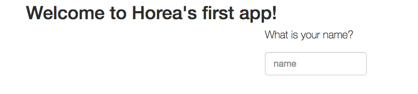

Let’s learn how to build that Node.js web-server using Bluemix! Before we start, you will need to do a few things.
Initial Setup
1) Get a Bluemix Account
2) Install Homebrew or another package manager
3) Install npm and Node
4) Install cf command line tool
Starter Code
Open up terminal, and use the following git commands:$ git clone https://github.com/IBM-Bluemix/bluemix-hello-node
$ cd bluemix-hello-nodeTest Locally
$ npm install
$ npm start
If everything is all and well, your site should look similar to this: 
Bluemix Login
Firstly, set the enviornment with the cf api command:$ cf api https://api.ng.bluemix.net
If all went well, you should see this:
Setting api endpoint to https://api.ng.bluemix.net... OK
Next we need to login to Bluemix:
$ cf login
If you have a IBM w3ID, this will not work, and you will have to use this command instead:
$ cf login -sso
You’ll get prompted with a one time code, and then you can simply copy and paste that code to login.
Deploy
This is the cool part! Getting to put that app out there!
Firstly, let’s open up our manifest.yml in your favorite text editor, mine being Atom.
Now we must come up with a unique URL for our site. This is done by changing the host: line in the manifest.yml file.
Change the line host: hello-node to username-hello-node. Should look similar to this, except with your
own user name, not mine. 
One last command:
$ cf push
If you run into this error  it is because the name is not unique.
it is because the name is not unique.
Conclusion
If there are no errors, you are officially deployed! Go to http://username-hello-node.mybluemix.net/ to see your finished product! One last thing: if you want to make some changes, simply change something in the index.html file for example, and then just use cf push to deploy your latest changes. Happy coding!